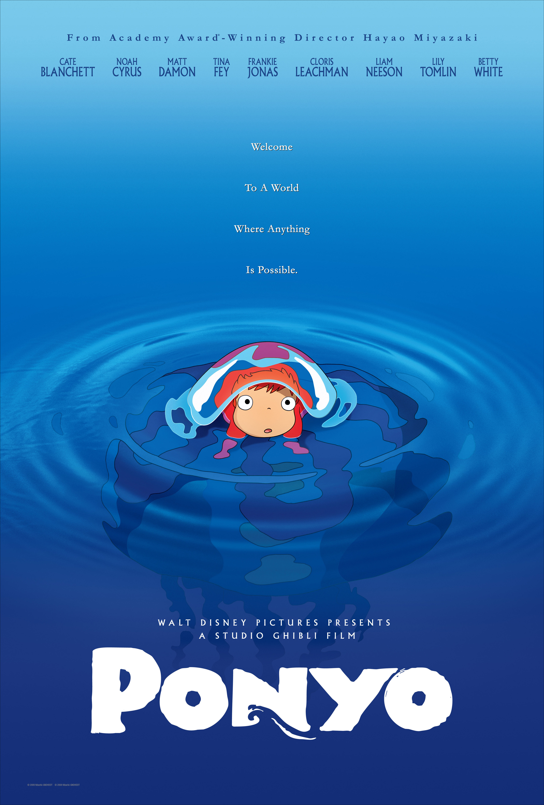
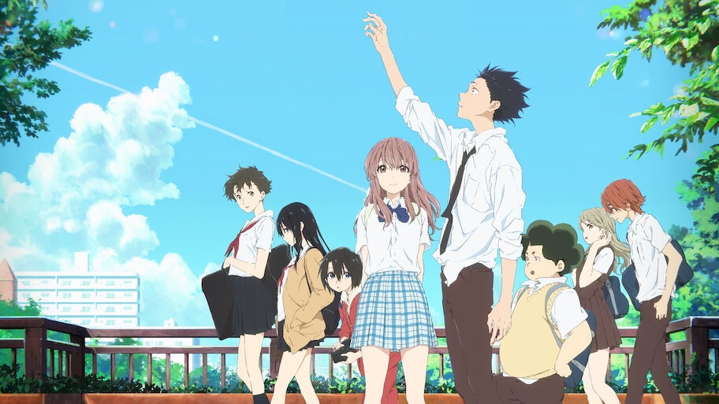
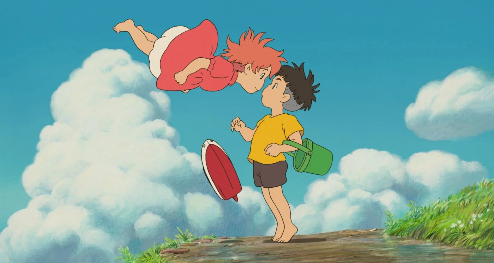
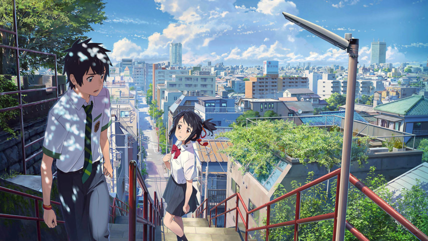

A grade-school student with a hearing impairment is bullied and transfers to another school. Years later, the former bully is tormented by his behaviour and sets out to make amends.

During a forbidden excursion to see the surface world, a goldfish princess encounters a human boy named Sosuke, who gives her the name Ponyo. Ponyo longs to become human, and as her friendship with Sosuke grows, she becomes more humanlike. Ponyo's father brings her back to their ocean kingdom, but so strong is Ponyo's wish to live on the surface that she breaks free, and in the process, spills a collection of magical elixirs that endanger Sosuke's village.

Two teenagers share a profound, magical connection upon discovering they are swapping bodies. Things manage to become even more complicated when the boy and girl decide to meet in person.